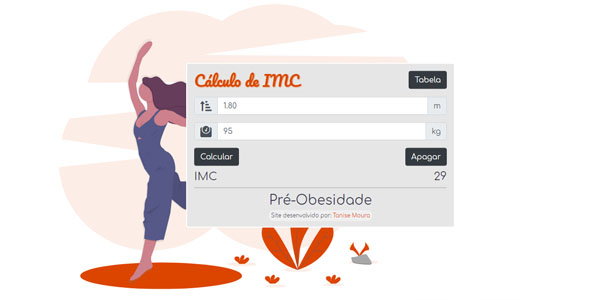
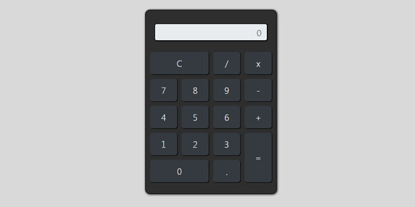
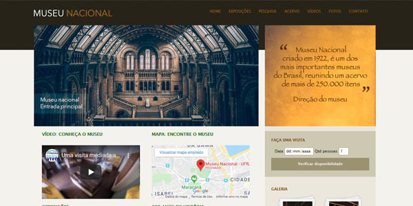
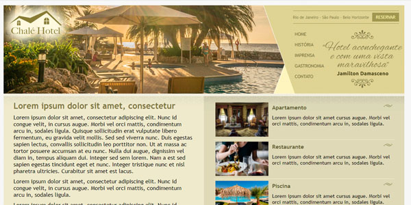
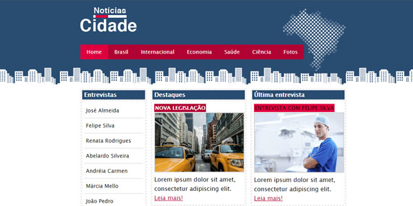
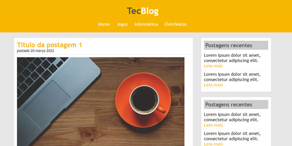

Trabalhos
Aqui armazeno todos os meus projetos, a maioria feitas no curso. Julgo importante mostrar todas como forma de mostrar meu progresso e evolução como desenvolvedora.

Calculadora de IMC
Aplicativo de cálculo de IMC. HTML5/CSS3/Bootstrap/JavaScrip
Projeto feito como meio de revisão dos conteúdos estudados até então. Foco em funções e if/else.
Repositório
Calculadora
Aplicativo de calculadora. HTML5/CSS3/Bootstrap/JavaScript
Projeto criado durante o curso de Desenvolvimento Web dos professores Jorge Sant Ana e Jamilton Damasceno
RepositórioCópia Spotify
Cópia do site Spotify para fins de estudo. Design antigo do site HTML5/CSS3/Bootstrap/JavaScript
Projeto criado durante o curso de Desenvolvimento Web dos professores Jorge Sant Ana e Jamilton Damasceno
RepositórioFinans
Site de finanças fictício HTML5/CSS3/Bootstrap/JavaScript
Projeto criado durante o curso de Desenvolvimento Web dos professores Jorge Sant Ana e Jamilton Damasceno
Repositório
Museu Nacional
Site de museu fictício explorando novas tags e funcionalidades. HTML5/CSS3/JavaScript
Projeto criado durante o curso de Desenvolvimento Web dos professores Jorge Sant Ana e Jamilton Damasceno
Repositório
Chalé Hotel
Criação de site para um hotel fictício com uso de design fluído. HTML5/CSS3
Projeto criado durante o curso de Desenvolvimento Web dos professores Jorge Sant Ana e Jamilton Damasceno
Repositório
Notícias Cidade
Site de notícias fictício, estudo de layouts de 3, 2 e 1 coluna. HTML5/CSS3
Projeto criado durante o curso de Desenvolvimento Web dos professores Jorge Sant Ana e Jamilton Damasceno
Repositório
Tec Blog
Projeto fictício usado como treino de criação de tabelas. HTML5
Projeto criado durante o curso de Desenvolvimento Web dos professores Jorge Sant Ana e Jamilton Damasceno
RepositórioAnna Bella
Portfólio feito para uma cliente fictícia. HTML5/CSS3
Projeto criado durante o curso de Desenvolvimento Web dos professores Jorge Sant Ana e Jamilton Damasceno
RepositórioUNES
Projeto fictício usado como treino de criação de tabelas. HTML5